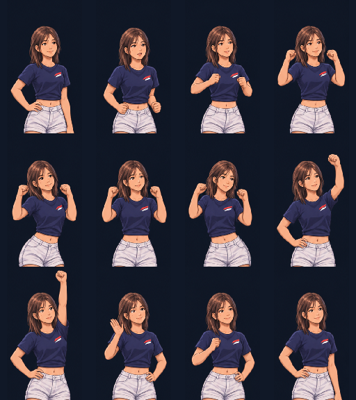

Nao — victory dance
Motion study · fictional adult character · simple stadium outfit
Portrait footprint · 128 × 192
NAO
MORITAFukuoka, Japan
Level 02 concept
Native pixel comparison
Nao · proposed portrait Nico · current native assetGerard · current native asset, before 1.125× game scaling
Nico · current native assetGerard · current native asset, before 1.125× game scaling
A short anticipation, raised fists, side-to-side weight shifts, one arm overhead, then a settled return. The first and last playback frames use the same pixels. The generated hand-wave poses are excluded because their arm continuity is inconsistent.
This is a timing and silhouette preview, not a level-2 game integration. It still uses a dark review background. Final cutouts and additional in-between poses will be prepared after review.
All generated key poses
